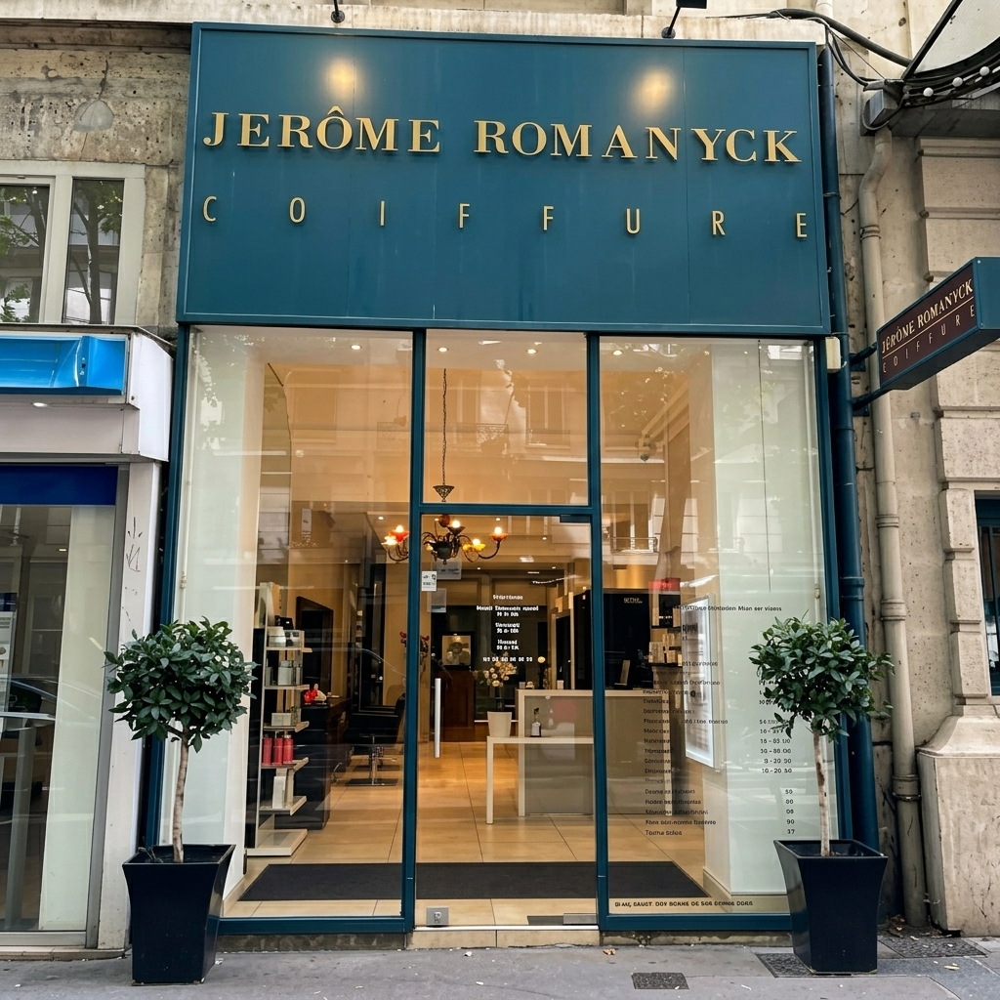
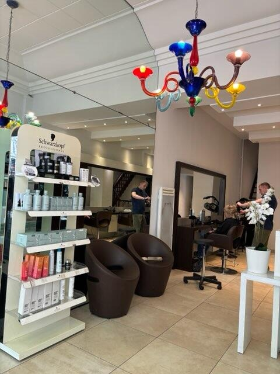
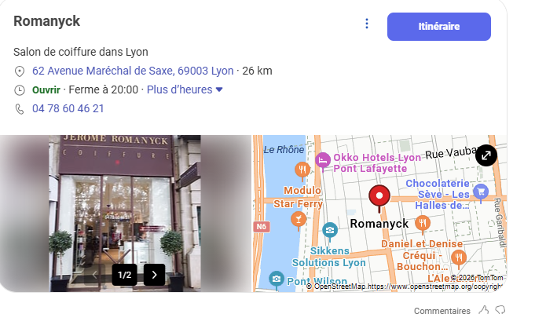

L'art de la coupe.
La science de la nuance.
Depuis plus de 25 ans, Jérôme Romanyck et son équipe réinventent votre identité visuelle à Lyon. Entre rigueur graphique du stylisme sur-mesure et alchimie colorielle de pointe, vivez une expérience haute couture dédiée aux esthètes exigeants, hommes et femmes.

L'Équilibre Absolu entre Ligne et Couleur
Nous envisageons la coiffure comme une discipline artistique. Chaque coupe structure le visage, chaque reflet illumine le regard.
Le Stylisme Graphique & Morpho-Coiffure
Une coupe réussie ne suit pas les modes : elle révèle votre architecture naturelle. Par une analyse minutieuse de vos traits, de votre port de tête et de l'implantation de vos cheveux, nous dessinons des coupes sur-mesure, faciles à vivre au quotidien mais à la structure impeccable et intemporelle.
- Diagnostic visagisme personnalisé
- Coupes graphiques & structures modernes
- Stylisme masculin (texturisation, coupes ciseaux & tondeuse)

Le Salon-Galerie
Un lieu hybride où le design se mêle à l'art classique. Notre espace bacs, adossé à un bleu canard profond et orné d'un tableau d'époque, invite à une véritable déconnexion sensorielle.
La Colorimétrie Haute Couture
Coloristes experts, nous maîtrisons la physique et la chimie des pigments pour créer des nuances d'une brillance absolue. Nous jouons avec la lumière, créons des contrastes subtils pour donner du relief et de la profondeur à votre chevelure sans jamais altérer sa matière.
- Balayages signatures & micro-painting
- Ombres subtils & fondus de racines ultra-naturels
- Soins profonds reconstructeurs et fixateurs de pigments
Le Diagnostic Signature en 3 Temps
Parce que chaque style est unique, Jérôme Romanyck fonde son expertise sur un protocole d'analyse individuel précis développé depuis 25 ans.
L'Étude Morphologique & Visagisme
Nous débutons chaque rendez-vous par un échange approfondi. Forme du visage, grain de peau, couleur des yeux, ligne du cou, mais aussi texture naturelle et implantation capillaire : tout est analysé pour esquisser les bases de votre structure idéale.
La Création & L'Accord Chromatique
C'est l'alchimie du geste. Jérôme Romanyck sculpte la coupe au ciseau avec une rigueur géométrique tandis que l'expert-coloriste élabore un mélange sur-mesure. Nous marions la coupe et la nuance chromatique pour sublimer les contrastes et capter la lumière.
La Pérennisation & Rituels Privés
L'excellence se prolonge à domicile. Nous vous transmettons les conseils professionnels pour entretenir la structure de votre coupe et l'éclat de votre couleur chez vous, accompagnés de soins capillaires de pointe.
Notre Studio en Détail
"Le minimalisme n'est pas le manque de quelque chose, c'est simplement la quantité parfaite de chaque élément."
À travers ces instantanés de notre studio, découvrez une atmosphère pensée pour le confort intellectuel et visuel de notre clientèle. Un espace d'expression pure où chaque flacon de soin, chaque miroir et chaque éclat de lumière a été pensé pour faire de votre visite un moment suspendu.



Rituels de Stylisme & de Couleur
Toutes nos prestations débutent par un entretien approfondi avec diagnostic morphologique et analyse de la fibre capillaire.
Shampoing Coupe Coiffage
40 €Diagnostic visagisme personnalisé, shampoing sensoriel, massage relaxant du cuir chevelu, coupe de structure sur-mesure et séchage ou coiffage personnalisé.
Shampoing Coiffage
22 €Shampoing traitant adapté aux besoins de votre chevelure, soin et brushing signature lisse, souple ou bouclé haute tenue.
Couleur + Coupe Coiffage
59 €Rituel coloration sur-mesure Schwarzkopf Professional (sans ammoniaque), avec shampoing, soin protecteur de pigments, coupe et coiffage complet.
Couleur + Coiffage
44 €Coloration profonde et lumineuse pour raviver vos nuances, accompagnée d'un shampoing, soin fixateur d'éclat et coiffage brushing.
Mèches + Coupe Coiffage
72 €Technique d'éclaircissement sur-mesure (mèches ou balayage), rituel de soin reconstructeur, coupe graphique personnalisée et coiffage.
Mèches + Coiffage
57 €Éclaircissement délicat et multi-tons pour apporter du relief, shampoing sensoriel, soin fixateur de reflets et brushing signature.
Shampoing Coupe Coiffage
23 €Diagnostic morphologique, shampoing clarifiant, massage relaxant du cuir chevelu, coupe précise aux ciseaux ou tondeuse et coiffage texturisé.
Forfait Étudiant
19 €Tarif préférentiel incluant shampoing massant, coupe tendance adaptée et coiffage (sur présentation d'un justificatif étudiant).
Forfait Enfant (- de 10 ans)
14 €Coupe adaptée et rapide pour les plus jeunes, avec shampoing très doux et séchage ou coiffage naturel.
Coloration & Pigmentation
à partir de 30 €Application précise en racine de nos colorations haut de gamme pour une brillance intense et une couverture parfaite.
Mèches & Balayage Signature
à partir de 45 €Placement libre et technique de création d'éclat sur-mesure pour apporter du relief et de la luminosité à vos cheveux.
Gloss, Patine & Soin Éclat
à partir de 15 €Bain de lumière ton sur ton pour sublimer vos reflets, neutraliser les faux reflets ou patiner un blond.
Transformation Blondeur & Lissage
sur devisChangement de ton radical, décoloration globale ou soin lisseur de prestige. Devis gratuit réalisé sur place.
L'Écho du Studio
Découvrez les retours d'expérience de nos client(e)s, fidèles esthètes du cheveu à Lyon depuis plus de 25 ans.
Nos Rituels s'appuient sur l'Excellence des Grandes Maisons
Entrez chez Jérôme Romanyck
Nous vous accueillons au cœur d'un studio d'exception à Lyon pour donner vie à vos projets capillaires les plus exigeants.
Le Studio
62 Avenue Maréchal de Saxe, 69003 Lyon
Horaires
Mardi — Vendredi : 9h00 – 20h00
Samedi : 9h00 – 19h00
Fermé le Dimanche & Lundi
Téléphone

Parking Saxe-Bonnel à 100m | Métro : Place Guichard (Ligne B) ou Cordeliers (Ligne A) à 5 min
Planifier un Rendez-vous
Remplissez cette demande. Notre équipe vous recontactera dans l'heure pour valider votre heure de passage.